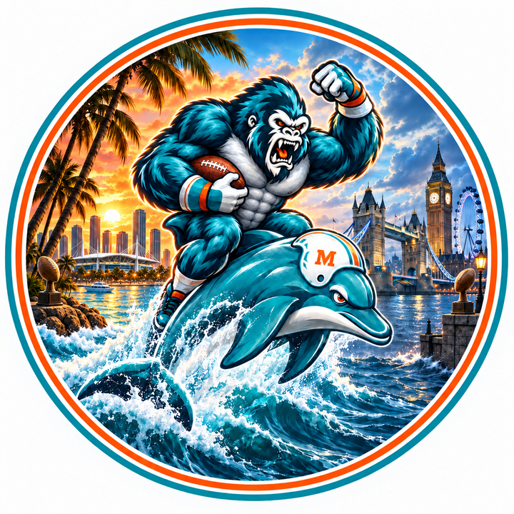
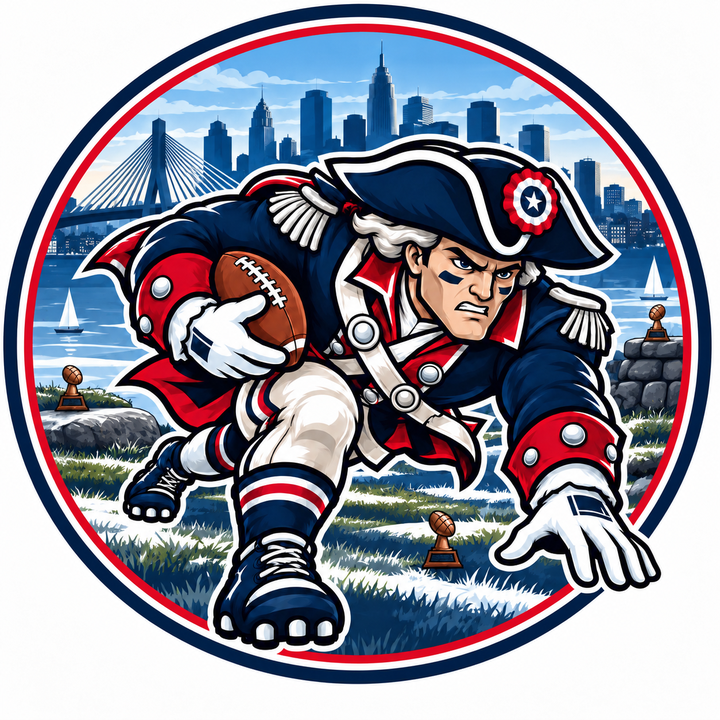
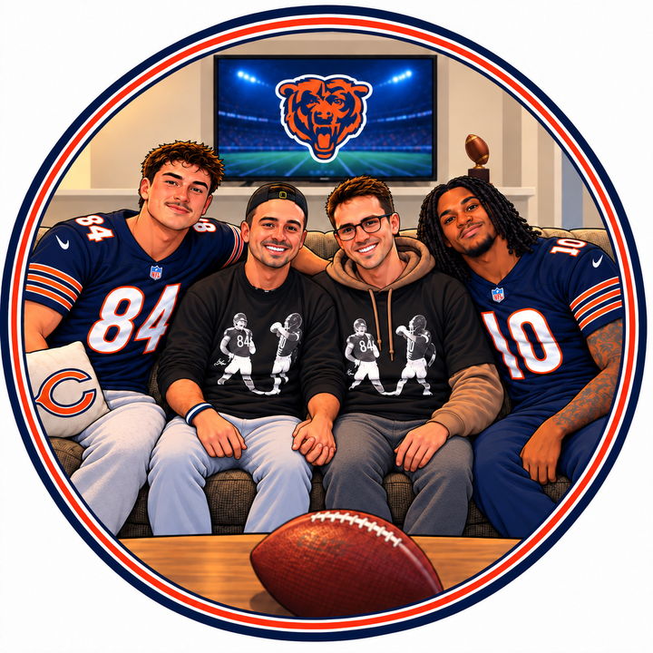

Dirk's Squad 2–0 vs The Fins Maniacs 2–0
Dirk's Squad and the Fins Maniacs meet in Week 3, both at 2–0. Dak Prescott threw four touchdowns, the last to CeeDee Lamb, with Brock Purdy producing from the bench. The Fins Maniacs won by nine after Jaxson Dart left in the first quarter. One unbeaten record ends this week.
-
1—The Dylan Panthers Last week 12–0 · Holler 1st · 328 PF · W 178–71 vs Greaseheads
Josh Allen accounted for five touchdowns, three passing and two rushing, in a 178-point demolition. Taylor and Cook both scored, Kelce topped 100 yards in overtime, and the Patriots defense added a scoop-and-score.
-
2—

New England Patriots Last week 22–0 · Salois & Yaggy 1st · 275 PF · W 126–71 vs Gooch CanalJaxon Smith-Njigba caught nine passes for 155 yards and three touchdowns, a receiver day that ended the matchup. DeVonta Smith added a score and 117 yards. The Patriots then bid $55 on Denzel Boston.
-
3—The Fins Maniacs Last week 32–0 · Salois & Yaggy 2nd · 242 PF · W 118–109 vs Mishaps
The Fins moved to 2–0 after Jaxson Dart left in the first quarter. Patrick Mahomes threw for 382 yards and three touchdowns, and Jahmyr Gibbs added a receiving score. The margin was nine.
-
4▲ 3Dirk's Squad Last week 72–0 · Holler 2nd · 221 PF · W 117–74 vs SBC
Dak Prescott threw four touchdowns, the last of them to CeeDee Lamb, and passed Tony Romo as Dallas's all-time leader. Lamb finished with two scores. Brock Purdy had a starter's afternoon from the bench.
-
5▼ 1
 The Mitchell Mishaps Last week 41–1 · Salois & Yaggy 3rd · 256 PF · L 109–118 vs Maniacs
The Mitchell Mishaps Last week 41–1 · Salois & Yaggy 3rd · 256 PF · L 109–118 vs ManiacsAmon-Ra St. Brown caught two touchdowns and went for 142 yards, with Kenneth Walker adding 117 on the ground. It still was not enough once Jaxson Dart exited in the first quarter.
-
6▲ 2

Team We Are Here Last week 81–1 · Holler 3rd · 207 PF · W 110–108 vs Mia HamstersDavante Adams won it on Monday night: eight catches, 195 yards and two touchdowns, with Puka Nacua out. The margin was two. Jalen Hurts watched from the bench while Caleb Williams started quiet.
-
7▲ 2Mia Hamsters Last week 90–2 · Salois & Yaggy 4th · 203 PF · L 108–110 vs We Are Here
Ja'Marr Chase scored twice, and Christian McCaffrey ran for two more, including the 100th touchdown of his career. None of it mattered on Monday night. The Hamsters lost by two.
-
8▼ 3
 The Short Bus Crew Last week 50–2 · Holler 4th · 195 PF · L 74–117 vs Dirk's Squad
The Short Bus Crew Last week 50–2 · Holler 4th · 195 PF · L 74–117 vs Dirk's SquadDerrick Henry found the end zone and still could not keep the Short Bus Crew close. Puka Nacua sat out, the passing game never arrived, and Dirk's Squad was in control throughout.
-
9▼ 3Omar Malik / Gooch Canal Last week 60–2 · Salois & Yaggy 5th · 184 PF · L 71–126 vs Patriots
Jaxon Smith-Njigba's three touchdowns were the whole afternoon. Gooch Canal's best starter was kicker Brandon Aubrey, while Jaylen Waddle's 138 receiving yards sat on the bench. Diggs was dealt afterward.
-
10—
 Halloween Greaseheads Last week 100–2 · Holler 5th · 164 PF · L 71–178 vs Panthers
Halloween Greaseheads Last week 100–2 · Holler 5th · 164 PF · L 71–178 vs PanthersThere was no answer for Josh Allen's five-touchdown day. Saquon Barkley was stuffed, DJ Moore disappeared, and the deficit reached 107. Sam answered later, adding Tyler Shough for $23 and Stefon Diggs for Brian Thomas Jr.